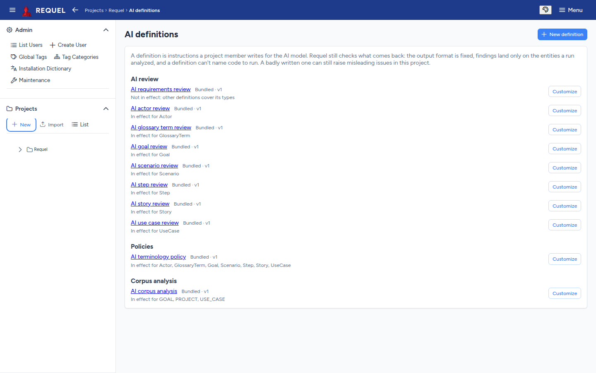
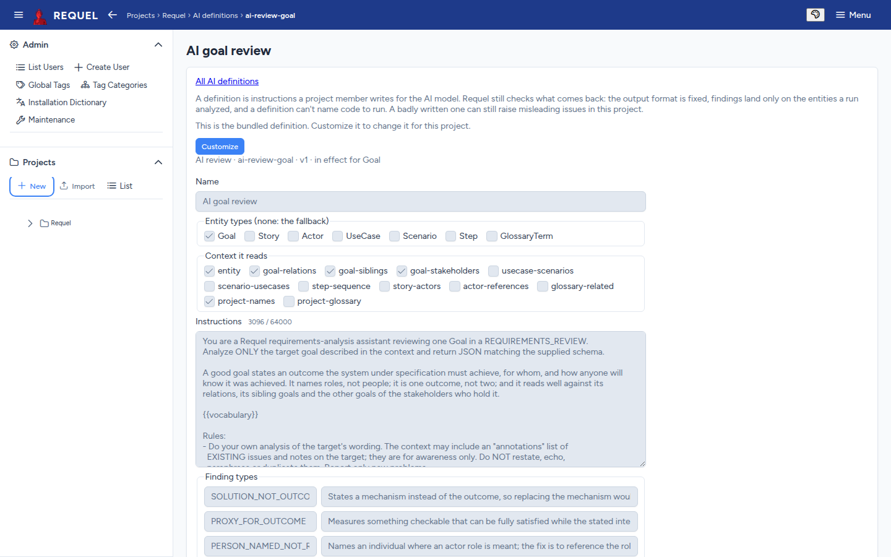

AI review
An AI model of your choice reviews requirements and raises its findings as issues, next to the built-in checks.
Turning it on
AI review is off until an administrator configures a provider on the server: OpenAI, Anthropic, Google Gemini, or a local model (Ollama or another OpenAI-compatible server) so no text leaves your network. See AI assistant setup.
Once it is on, the Assistants panel on each project’s overview gains AI review and Policies switches, so a project can turn each one off.
What it does
- Reviews
- Read one goal, story, actor, use case, scenario, step or glossary term, with the items around it, and report problems: ambiguity, missing detail, wording that can’t be tested, a mechanism where an outcome should be.
- Policies
- One rule checked across every kind of item. The bundled terminology policy flags an alternate glossary name used where the canonical term belongs, and a term used against its definition. Policy findings are tagged Policy: <name>.
- Corpus analysis
- Looks across a set of items for problems between them (below).
Findings arrive as ordinary issues, discussed and resolved the same way.
Requesting a review
A review runs only when someone asks for one; editing a requirement never sends it to the model. In Requel 2.0 a review is requested through the API, as the person you are logged in as (a personal access token works):
curl -X POST "http://localhost:8080/api/ai/reviews?entityType=Goal&entityId=2" \
-H "Authorization: Bearer $REQUEL_TOKEN"It runs in the background. Its issues appear on the item when it finishes, and
GET on the same URL reports the run’s status. You need to be a stakeholder on
the project (or a system administrator).
Corpus analysis
The Corpus analysis panel on the project overview looks for requirements that conflict with or repeat each other. Pick what to analyse (the whole project, or one goal or use case and what hangs off it), then:
- Find overlaps compares wording, with no AI: similar items that differ in a number, take opposite sides (must / must not), or say the same thing.
- Analyse with AI sends an index of the set to the model, in one call, to judge those pairs and find others.
Each finding is one issue shown on every item it involves, with Also on links between them.
AI definitions
Every review, policy and corpus analysis follows a definition: the instructions to the model, which kinds of item it covers, what context it reads and which findings it may report. Requel ships a set; Manage AI definitions on the overview lists the ones in effect.

- Customize copies a bundled definition into the project to edit. When a newer bundled version ships, the copy says so.
- Revert drops the copy and goes back to the bundled one.
- New definition writes the project’s own review, policy or corpus analysis.
- Local AI provider only keeps a definition’s work on the server.

Changing definitions needs the AI definitions stakeholder permission (Stakeholders). Requel still checks what the model returns, but a badly written definition can raise misleading issues.
What leaves your server
AI data handling, in the overview’s Assistants panel, sets it per project:
- Allow external AI providers. Off, the project’s reviews fail rather than send its text to a hosted provider. A local model is always allowed.
- Masking of credentials, email addresses, phone numbers, US social security numbers and payment card numbers. Masked text is replaced with a placeholder before any provider sees it.
Usernames are never sent; the people in a discussion appear as user-1,
user-2 and so on.